|
Xin Liu|刘 鑫 I am a fourth-year Ph.D. student at Shanghai Jiao Tong University (SJTU), advised by Prof. Chenkun Qi. My research focuses on reinforcement learning and embodied AI. I was fortunate to spend time as a visiting Ph.D. student at the Human-Centered Robotic Lab, National University of Singapore (NUS), advised by Prof. Fan Shi. I also carried out research at Shanghai AI Laboratory, collaborating with Yan Ding and Bin Zhao. Email / CV / Google Scholar / LinkedIn |

|
Experience
sudo
2026

Gradient Network
2025 - 2026

Shanghai AI Laboratory
2024 - 2025
|
News
|
Publications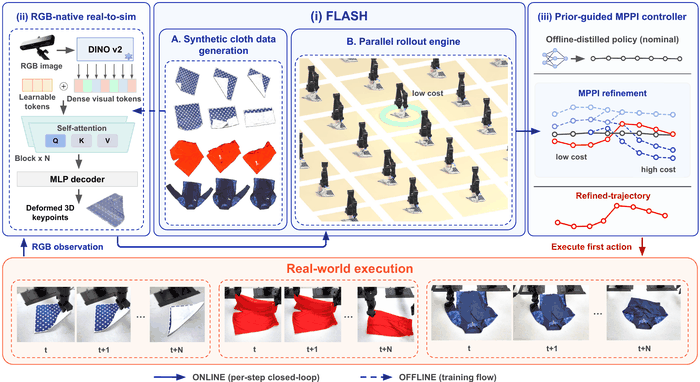 Enabling Robust Cloth Manipulation via Inference-Time Simulator-in-the-Loop Refinement
arXiv, 2026
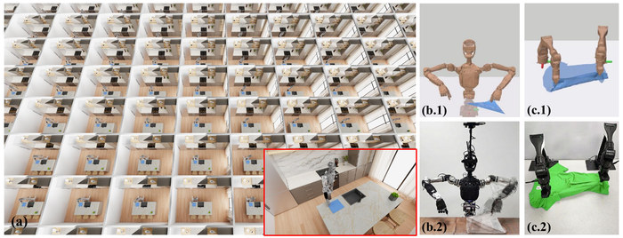 FLASH: Fast Learning via GPU-Accelerated Simulation for High-Fidelity Deformable Manipulation in Minutes
arXiv, 2026
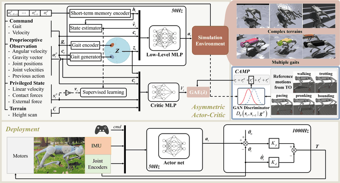 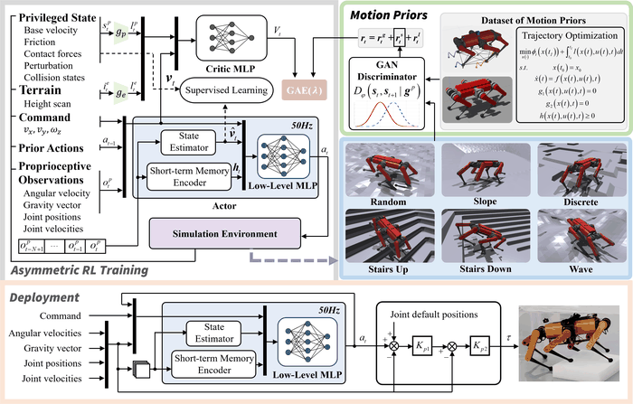 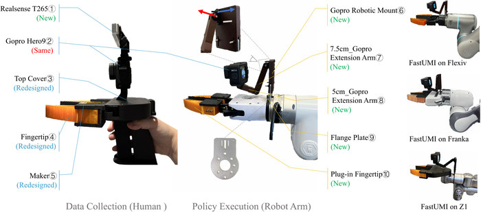 FastUMI: A Scalable and Hardware-Independent Universal Manipulation Interface with Dataset
CoRL, 2025
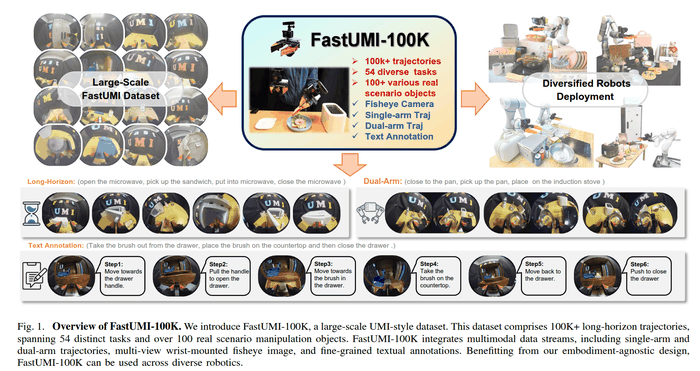 FastUMI-100K: Advancing Data-driven Robotic Manipulation with a Large-scale UMI-style Dataset
arXiv, 2025
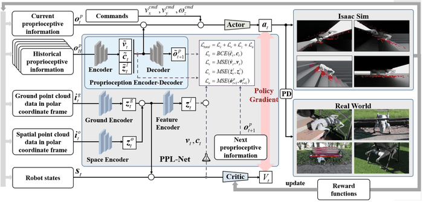 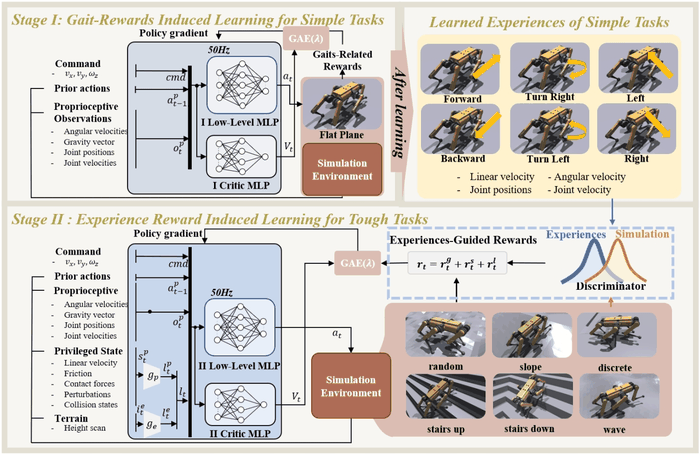 Experience-Learning Inspired Two-Step Reward Method for Efficient Legged Locomotion Learning towards Natural and Robust Gaits
IROS, 2024
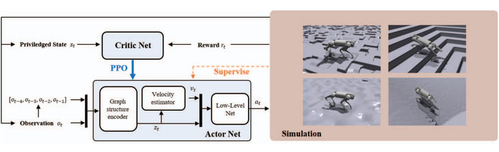 Learning Graphic Convolutional Network Based Quadruped Locomotion on Complex Terrain
CAC, 2024
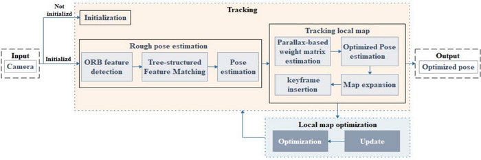 A Motion-Adaptive Parallax-Based Monocular Visual Odometry
CCC, 2023
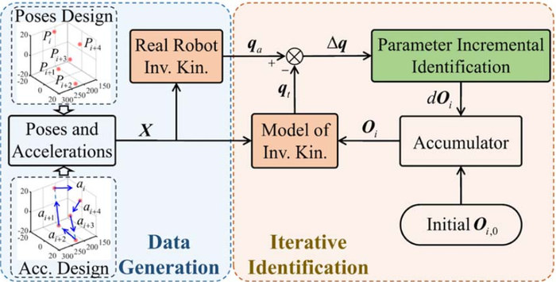 An actuation acceleration based kinematic modeling and parameter identification approach for a six-DOF 6-PSU parallel robot with joint clearances
ASME Journal of Mechanisms and Robotics (ASME JMR), 2025
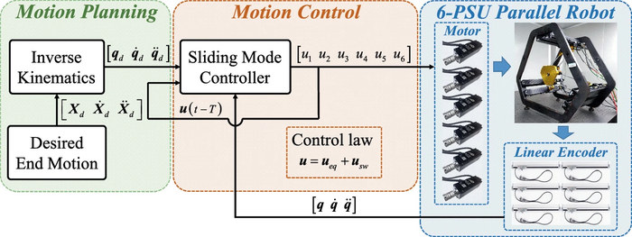 Multi-input multi-output sliding mode control with high precision and robustness for a 6-PSU parallel robot
ICIRA, 2023
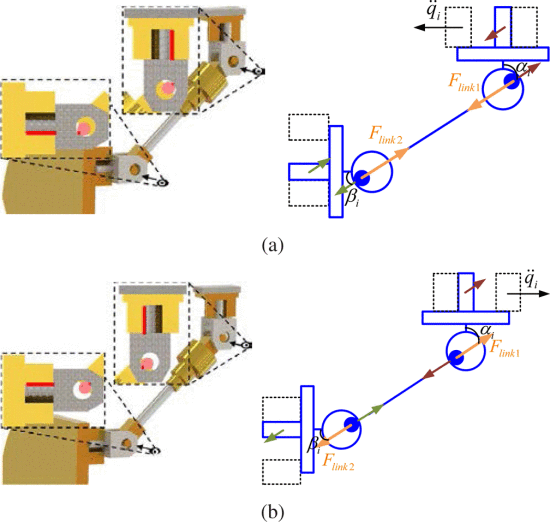 Modeling and identification of kinematic model with joint clearance for a 6-PSU parallel manipulator
CCC, 2023
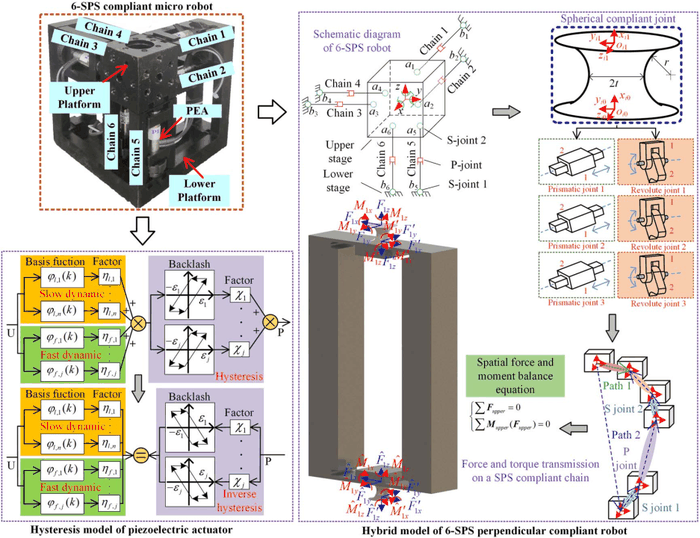 A modeling method for a 6-SPS perpendicular parallel micro-manipulation robot considering the motion in multiple nonfunctional directions and nonlinear hysteresis
Journal of Mechanical Design, vol. 145, no. 5, pp. 053301, 2023
* denotes equal contribution. |
|
Website template by Jon Barron, whose source code is free to reuse. |